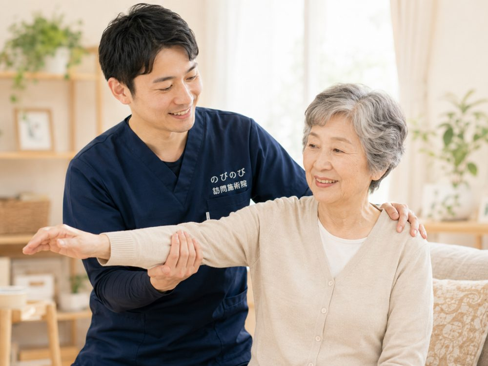

訪問での鍼灸を検討するとき、まず気になるのは「結局、毎月いくらかかるのか」ではないかと思います。デイサービスやヘルパーの費用もある中で、そこにいくら足すことになるのか、はっきりしないと決めにくいものです。じつは、1か月の費用は「1回の自己負担」と「月に受ける回数」の掛け算でほぼ決まります。ここでは1割・2割の方それぞれについて、週1〜3回のケースで具体的な金額をお伝えします。
まず大事なところから。1回の総額は3,950円で、自己負担は1割の方で約395円、2割の方で約790円。月の費用は、この金額に受けた回数をかけたものになります。1割なら週1回で月約1,580円、週2回で約3,160円、週3回で約4,740円。2割はちょうど倍です。この費用は医療保険で計算するため、介護保険の区分支給限度額とは別枠。デイやヘルパーで限度額いっぱいでも、枠を減らさずに受けられます。毎月、内訳のわかる明細をお渡しします。
毎月の支払いは「1回の自己負担 × 回数」でほぼ決まる
費用を調べ始めると、多くの方がまず気にするのは1回の値段ではなく、月にいくら出ていくのかという点です。デイサービスやヘルパーの費用と重なる時期だと、なおさら合計が読みにくくなります。ただ、訪問鍼灸マッサージの月額そのものはとてもシンプルで、1回あたりの自己負担額に、その月の受診回数を掛けるだけでおおよその見当がつきます。あとは「週に何回来てもらうか」と「ご自身の負担割合が何割か」、この二つが分かれば、うちはいくらになるのかがはっきりします。
1回の総額は3,950円、負担割合で自己負担が変わる
施術1回の総額は3,950円です。これは医療保険（療養費）を使い、医師の同意書にもとづいて行う場合の金額で、対応エリア内なら出張費や交通費が別途かかることはありません。実際にお支払いいただくのは、このうちご自身の負担割合にあたる分だけになります。1割負担の方なら1回およそ395円、2割負担なら約790円、3割負担なら約1,185円が目安です。機能訓練も鍼灸に加えて行うもので、追加料金はいただきません。なお初回に限っては、この施術費とは別に初検料がかかります。以降の月額は、この自己負担額を回数分だけ積み上げた数字とお考えください。
週1回で受ける場合の月額の目安
週1回はほとんどの方の出発点になる頻度です。初めての方には、体の様子を見ながら週1回から2回で始めていただくことが多くなっています。月におよそ4回として計算すると、1割負担で月1,580円ほど、2割負担で約3,160円、3割負担でも約4,740円あたりに収まります。祝日の並びや月によって回数が3回や5回に振れることもあるので、あくまで目安として受け取ってください。まずは負担の軽いところから、というご希望にも合わせやすい頻度です。
週2回に増やしたときはどのくらいか
週2回は、腰や肩のこわばりが強い時期や、体を動かす機会を増やしたい方に選ばれることの多いペースです。月8回で見ていくと、1割負担で月およそ3,160円、2割負担で約6,320円、3割負担で約9,480円になります。週1回のちょうど倍という覚え方で問題ありません。回数を増やしたぶん金額も上がりますが、途中で頻度を戻すこともできますので、その月の体調に合わせて調整していただけます。数字が前後する点は週1回のときと同じです。
週3回で受ける場合の月額
週3回は、より手厚く関わってほしいという場合の頻度です。月12回として計算すると、1割負担で月4,740円ほど、2割負担で約9,480円、3割負担で約14,220円が目安になります。ここまで来ると月ごとの回数のブレや、その日に行う施術内容によって、合計が数百円単位で動くことも珍しくありません。効果を約束するものではありませんし、病気そのものを治す施術でもないので、頻度は費用と体調の両方を見ながら決めていただくのがよいと思います。
ご夫婦やお支払いのしくみで変わること
ご夫婦やご家族が同じお宅、あるいは同一の建物で一緒に施術を受けられる場合、お一人あたりの負担が下がることがあります。お支払いは受診のたびに現金をやり取りするのではなく、月ごとにまとめてご精算いただく形です。その月の内容を記した明細をお渡ししますので、何回うかがい、いくらかかっているのかをあとから確認いただけます。月の途中から始められた場合は、その月に受けた回数分だけの計算になります。
費用を見比べるときに知っておきたい前提
訪問鍼灸マッサージは医療保険を使うため、要介護認定を受けていなくても利用できます。介護保険の支給限度額とは別の枠で扱われるので、デイサービスやヘルパーで限度額に達している方でも、その枠を圧迫せずに併用が可能です。保険の対象となるのは神経痛、リウマチ、頸肩腕症候群、五十肩、腰痛症、頸椎捻挫後遺症といった症状で、詳しくは鍼灸で保険が使える6つの症状と料金にまとめています。なお、同じ部位について医療保険のリハビリと鍼灸を同時に算定することはできない点にはご注意ください。料金の内訳や自己負担が決まるしくみをもう少し詳しく知りたい方は、料金はいくら？医療保険の自己負担額と仕組みもあわせてご覧いただくと、この記事の月額シミュレーションがより分かりやすくなります。
よくある質問
月の途中から始めても大丈夫ですか？
問題ありません。費用はその月に受けた回数分だけの計算になります。月初でも月半ばでも、開始のタイミングで損得は生じません。
1割負担だと1か月いくらくらいですか？
週1回で月約1,580円、週2回で約3,160円、週3回で約4,740円が目安です。月の週数によって多少前後し、正確な合計は明細で確認できます。
2割負担の場合の月額は？
1割のちょうど倍で、週1回が月3,160円、週2回が6,320円、週3回が9,480円です。1回あたりは約790円になります。
回数を減らしたり、休んだりできますか？
できます。回数はいつでも調整でき、体調や予定に合わせて減らすことも可能です。まったく受けなかった月は費用はかかりません。
月額のほかに費用はかかりますか？
出張費や交通費はかからず、エリア内はどこでも同額です。電気を用いる鍼や初回の検査で少額が加わる場合のみ、始める前にご説明します。
支払いはいつ、どのようにしますか？
お支払いは月ごとにまとめて行います。その月の施術内容のわかる明細をお渡ししますので、内訳はあとからでも確認していただけます。
この記事の根拠
はり・きゅう、あん摩マッサージ指圧の療養費は、厚生労働省が定めた取扱いにもとづく制度です。制度そのものをご自身で確かめたいときは、厚生労働省の療養費について（新しいタブで開きます）をご覧ください。「被保険者のみなさまへ」の案内も、同じページからたどれます。

訪問マッサージ・訪問鍼灸の料金はいくら？保険なら1回約395円から続けられます
続きを読む
訪問鍼灸マッサージの頻度は週何回、1回何分？時間と回数の目安
続きを読む
受領委任と償還払いの違いとは？｜訪問鍼灸マッサージの支払いのしくみをやさしく解説
続きを読む
訪問鍼灸マッサージの支払い方法・集金の仕組み｜お金のことがよくわかる
続きを読む訪問マッサージに交通費・往療料はかかる？費用の疑問にお答えします
続きを読む